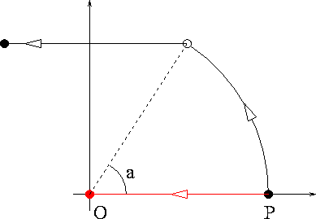

|  |
Com veieu a la figura, no és el mateix rotar P al voltant de l'origen un angle a i després aplicar una translació per -P (camí negre), que fer primer la translació (portant al punt P a l'origen O) i després la rotació (deixant-lo fix, ja que n'és el centre) (camí vermell).
Verifiqueu el mateix exemple amb matrius, comprovant que el producte de les matrius corresponents a aquest exemple depèn de l'ordre.